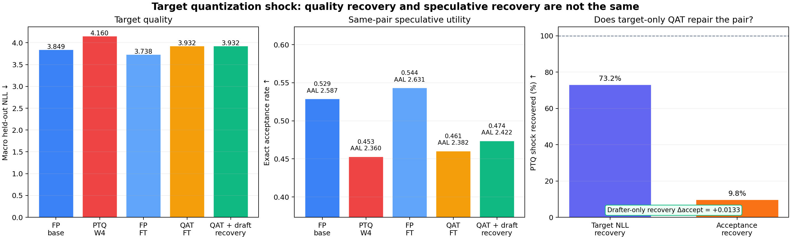
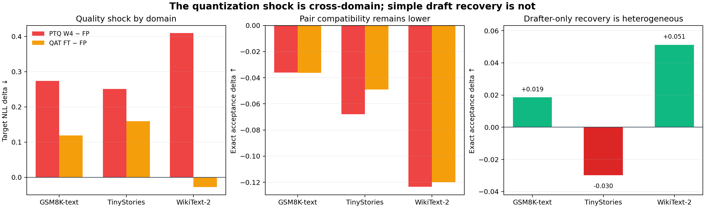

Pinned pretrained target. 원래 speculative pair.
Quantized-target compatibility audit · seed 99
Target만 QAT하면
pair도 복구되는가?
같은 drafter를 고정하고 FP target, W4 PTQ target, target-only QAT target을 교차했다. Target 품질 회복과 actual exact speculative acceptance 회복은 같은 문제가 아니었다.
GPT-2 / DistilGPT2Projection W4 fake quantHybrid LK η=3FP32 eager exact
+0.3112PTQ − FP macro target NLL
−0.0758PTQ − FP exact acceptance
−0.2275PTQ − FP AAL
120 / 120greedy target identity checks
Causal panel
한 drafter, 네 target
FP target에 40 step 적응한 drafter checkpoint 하나를 첫 네 condition에 그대로 재사용했다. Target change와 drafter co-adaptation을 먼저 분리한 설계다.
동일 FP-target-aware drafter checkpoint · parameter / optimizer / token exposure 고정
동일 latent weight를 즉시 projection-W4 fake quantize.
CE + frozen FP-teacher KL, 40 steps.
같은 batch/loss/schedule의 target-only W4 QAT.
마지막으로 QAT target을 고정한 채 drafter만 40 step 추가 적응해 post-hoc recovery ceiling을 측정했다. Target-side draft loss는 이 motivation panel에 적용하지 않았다.
Primary result
Quality는 상당히, acceptance는 거의 못 돌아왔다
Target NLL shock recovery
73.2%PTQ 4.1597 → QAT 3.9319 · FP base 3.8485Exact acceptance shock recovery
9.8%PTQ 0.4532 → QAT 0.4606 · FP base 0.5291
| Condition | Macro NLL ↓ | Teacher KL ↓ | Top-1 ↑ | Acceptance ↑ | AAL ↑ |
|---|---|---|---|---|---|
| FP base | 3.8485 | 0.0000 | 1.0000 | 0.5291 | 2.5872 |
| PTQ W4 | 4.1597 | 0.3021 | 0.6672 | 0.4532 | 2.3597 |
| FP target-FT | 3.7384 | 0.0276 | 0.9043 | 0.5436 | 2.6307 |
| QAT target-FT | 3.9319 | 0.2432 | 0.6911 | 0.4606 | 2.3819 |
| QAT + draft recovery | 3.9319 | 0.2432 | 0.6911 | 0.4739 | 2.4217 |
Paired exact evidence. QAT target의 FP-base acceptance residual은
−0.0684, prompt-cluster descriptive interval은 [−0.1141, −0.0209]였다. Prompt는 training-seed replicate가 아니지만 관찰 window의 잔여 gap은 일관된 방향이었다.Domain stratification
Shock는 공통, 간단한 recovery는 이질적
PTQ는 세 domain 모두 NLL과 exact acceptance를 악화시켰다. WikiText-2에서는 QAT NLL이 FP보다 좋아졌는데도 acceptance는 거의 복구되지 않았다.

| Corpus | PTQ−FP NLL | QAT−FP NLL | PTQ−FP accept | QAT−FP accept | Draft recovery |
|---|---|---|---|---|---|
| GSM8K-text | +0.2734 | +0.1188 | −0.0361 | −0.0363 | +0.0185 |
| TinyStories | +0.2506 | +0.1592 | −0.0680 | −0.0490 | −0.0299 |
| WikiText-2 | +0.4095 | −0.0280 | −0.1234 | −0.1199 | +0.0511 |
Prospective decision
무엇이 통과했고, 무엇이 실패했는가
Quantization shock
NLL +0.3112와 exact acceptance −0.0758. 같은 latent target과 같은 drafter.
≥80% quality recovery
Target-only QAT NLL recovery 73.2%. 사전 threshold를 사후 변경하지 않는다.
Spec recovery lag
Quality와 acceptance recovery 차이 63.4 percentage points.
Ordered decision:
motivation_not_established_seed99_single_pair. 이는 quantized-target mismatch가 없다는 뜻이 아니다. “target 품질이 80% 이상 복구된 뒤에도 acceptance만 남는다”는 더 강한 문장의 prerequisite가 실패했다는 뜻이다.Research framing
다음 방법은 target을 보호하며 pair를 함께 봐야 한다
이번 결과가 여는 질문은 “target quality constraint를 지키면서 QAT 중 proposal–target compatibility를 직접 최적화할 수 있는가?”다. Draft-aware는 raw auxiliary gradient를 target Adam에 반드시 더한다는 뜻이 아니다. Quantization scale/code update, distillation target, calibration data, constrained response, alternating 또는 bilevel step이 drafter-aware해도 된다.
Proposal family는 더 이상 categorical out-of-scope가 아니다. Independent drafter, native multi-token head, feature-prediction head 모두 같은 umbrella hypothesis 아래 다룰 수 있다. 다만 이번 수치는 independent GPT-2/DistilGPT2 pair 하나이므로 family label을 유지하고 별도 stratum으로 재현해야 한다.
Exact endpoint
Temperature 1 · full tokenizer support · K=3 · FP32 eager serial full-prefix per target position.
Temperature 1 · full tokenizer support · K=3 · FP32 eager serial full-prefix per target position.
Not a serving result
Projection-only fixed-grid W4 fake quant. Packed INT4, activation/KV quantization, throughput claim 없음.
Projection-only fixed-grid W4 fake quant. Packed INT4, activation/KV quantization, throughput claim 없음.
Inference unit
Training seed n=1. Prompt-cluster interval은 descriptive이며 selection seeds 6–8은 sealed.
Training seed n=1. Prompt-cluster interval은 descriptive이며 selection seeds 6–8은 sealed.
Loss reference
LK Losses adaptive Hybrid LK η=3; target-only QAT loss는 CE + frozen FP-teacher forward KL.
LK Losses adaptive Hybrid LK η=3; target-only QAT loss는 CE + frozen FP-teacher forward KL.